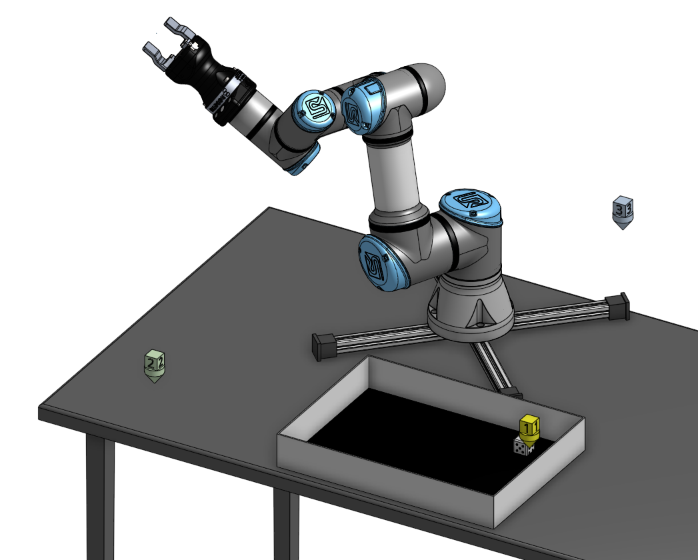

◦ Electrical Propulsion
◦ Industry 4.0
◦ Electro-Mechanical Systems
◦ Computer-Aided Design
Industry 4.0
LEGO Looping Manufacturing Bot
At PTC, we needed a simple demonstration of a closed-loop manufacturing system with
state-based control and vision systems.
In creating any kind of manufacturing demonstration system, a challenge is to build it to be good enough to generate lots of data, and bad enough so that there is enough variation between operations to approxiomate reality.
Industry 4.0:
Over six years co-directing the education programs at PTC, I
worked with industry, government and academic thought leaders creating industrial and educational systems
leveraging smart and interconnected "Industry 4.0" technologies and platforms.
Many of those projects
involved using PTC's augmented reality platform, Vuforia, combined with their Industrial Internet of Things
platform, Thingworx, to create real-time, bi-directional digital twins. We used a Universal Robotics UR3 and Allen-Bradley Programmable Logic Controllers (PLCs) and created demonstrations to help thought leading faculty understand how they could incorporate these tools into their classes.
Over the years I've collaborated with and advised many engineering faculty around teaching the principles, concepts and technologies involved with smart manufacturing and Industry 4.0. One of the larger projects I helped with is the Smart Factory at Purdue Polytechnic Institute.
Onshape-based CAD Digital Twins

In an effort to lower the barrier to entry for these types of technologies and make them more accessible to education, my team duplicated some of the capabilities in the PTC portfolio using Python with Google Colab and Onshape, which both have free options and are widely available. With these technologies, we were able to create bi-directional near-real time CAD digital twins, for example, using CAD waypoints to drive the motion of the robot:  The configurable Onshape document is public, as is the Google Colab Python to communicate with the robot, included in the PTC Education API Playground, developed by my team at PTC.
PLC controlled Lego SPIKE Prime

This short video shows how we were using a Rockwell Automation Allen-Bradley PLC integrated into a small, portable demonstration platform. I wrote ladder logic in the PLC to control the attached, light array. Using a prototype spatial computing platform called Vuphoria spatial toolbox, I connected to the Lego spike prime over Bluetooth, and could control its motion using the parameters coming from the PLC. When the light was green the vehicle would go, for yellow it would go at half speed, and when red it would stop..
The camera pans out to show the view of an iPad, which was running an AR experience at the same time. In the augmented reality experience, there is a AR stop light on a lamp post, which is also connected to the data from the PLC through thing works and updates in real time. Note that the thing works instance used in this demonstration was hosted in the cloud, so the PLC is sending the state of the system to the cloud, which is then coming back to the iPad. When the light turns from yellow to red, you can see a small delay between the actual lights on the PLC demonstrator versus the AR traffic light due to that added complexity.
On the left side of the screen of the IOT demonstrator shows Rockwell Automation's Emulate 3D, where we also imported a 3-D model of the light post and we're able to animate it in real time as part of their automation software, and the right side of the screen shows a simple Thingworx 'mashup' or dashboard, with a 2D digital twin of the traffic light.

The video above shows the same I4.0 demonstrator and program running, but in this case, the data is being sent to Onshape to animate a CAD model in near-real-time. The demonstration leverages REST API protocol, which isn't meant for a real time processing, and generally include includes a approximately one second delay.
during Covid when many of us were working from home, I spent a lot of time with the UR-3 creating demonstration and examples of how to integrate with PTC technologies like augmented reality.
One of the most useful examples I created was a re-creation of a demonstration I made at the lab view, where the robot would roll a die, then use a vision system to locate the guy, pick it up, count the number on the top face and stored in a database, then roll die again… I built a portable cart for the robot, which allowed us to move this demonstration around.

This was a great way to generate a large data set, end of the results of the day could be used to trigger different events in a more complex demonstration system.

universal robots are small, affordable, and relatively safe, but since not, everyone can afford that our team often use Lego as a way to apply apply some of the same principles. In the video above, I created a small version of the classis "Let's Make a Deal" Plinko game, as a way to try to generate a large data set with a reputable process with some variation. The Lego elevator would drop the disc, which could fall into either the left or right channel, which was recorded and stored. An example of natural variation in a manufacturing system.